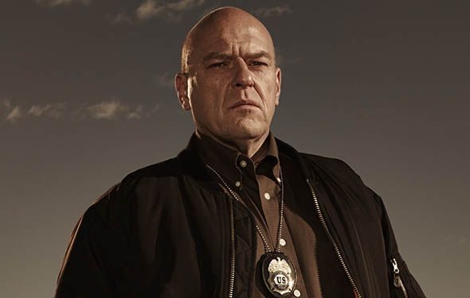
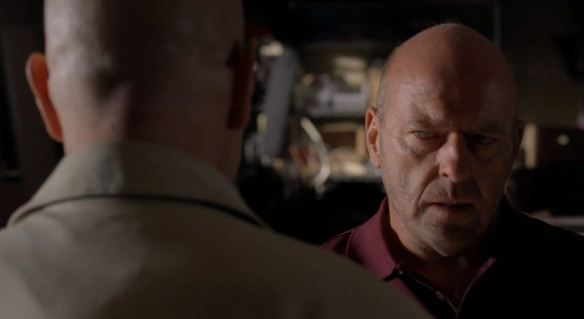

Hank Schrader é o personagem mais carismático e correto de toda a série, além de ser um agente da Agência Antidrogas (DEA). Como agente da DEA, Hank liderou as investigações do fabricante de metanfetamina chamado Heisenberg (sem saber que era seu próprio cunhado), bem como o de Gustavo Fring e seu império de drogas. Hank ao decorrer da série enfrenta várias ameaças dos cartéis de drogas rivais, que afetam sua saúde mental, levando-o a desenvolver transtorno de estresse pós-traumático TEPT. Na série, a cena mais emblemática de Hank é dele matando os primos de Tuco Salamanca ferido na terceira temporada.
Voltando para o tema da psicologia das cores, Hank possui duas cores muito predominantes na série inteira que são as cores laranja e marrom. Nos episódios da primeira temporada vemos Hank utilizando a cor laranja com bastante frequência, simbolizando humor, ação, força e violência. No episódio onde Hank mata o Tuco Salamanca, a cor de sua camisa é laranja.
O episódio piloto de Breaking Bad mostra Hank mais carismático e com um toque de humor bem forte e marcante, sendo assim, sua camisa diz por si só essa interação.
A cor marrom de Hank simboliza a sua retidão, estabilidade e força. O que vem a tona no episódio "Negro Y Azul" que Hank vai até El Paso para um caso e lá se depara com uma situação que nunca tinha visto, uma cabeça decapitada em cima de uma tartaruga escrita "Hola DEA" (essa cabeça era de um traficante chamado Tortuga). E a tartaruga causa um estrago com os policiais por perto.
Depois desse ocorrido traumático na vida de Hank, suas roupas ganham tons de marrom e ficam mais escuras até sua luta contra os primos de Tuco, que acabam deixando ele bastante ferimentos físicos, incluindo pernas quebradas que forçam o personagem a usar muletas e a enfrentar um longo período de recuperação. Marie tenta ajudá-lo mas Hank se sente frustado e deprimido com sua condição física e incapacidade de voltar à sua antiga vida. Depois de se recuperar, o personagem volta a utilizar cores mais claras. Até ele voltar com tudo ao caso Heisenberg.
Hank também utiliza a cor vermelha, principalmente na cena que ele descobre que Walter era a pessoa que ele mais procurava na sua vida.
